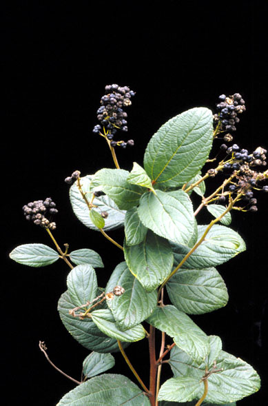
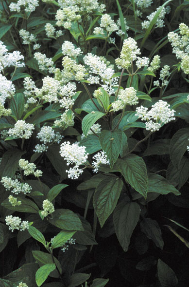
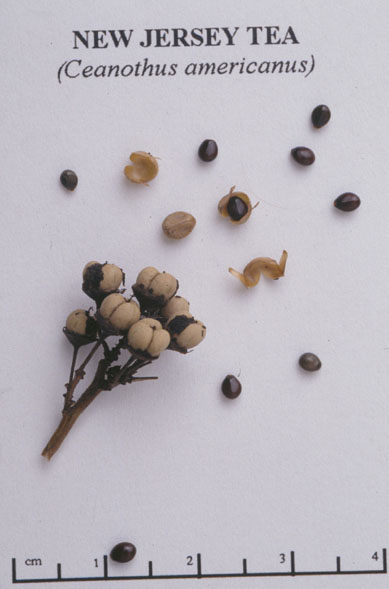
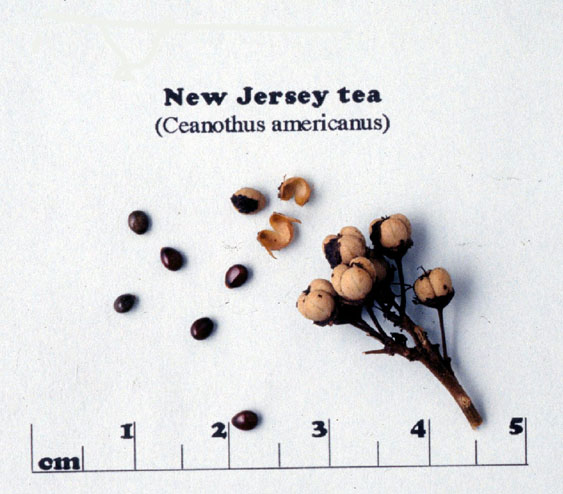

Ceanothus Americanus
Family: Rhamnaceae
New Jersey Tea
Swink/Wilhelm #6



Click to view larger photo
FLOWERING: Late June to August
SEED TIMING: Mid-August to Mid-September
HABITAT: Dry, open woods and prairie edges
DIAGNOSTIC FEATURES: 1 - 3 feet. A low, slender shrub with tiny white flowers in oval clusters rising from the leaf axils. Flowers borne at the end of new growth. Leaves are alternate, toothed, ovate and downy beneath with 3 prominent veins. The entire plant has a gray-green cast.
TO PICK: The fruit is a 3-chambered berry. As the seed capsules mature, they become dry and black and are easily recognized. Check frequently when the capsules begin to ripen and try to pick them before they split. Snap off entire head and place in a closed paper bag